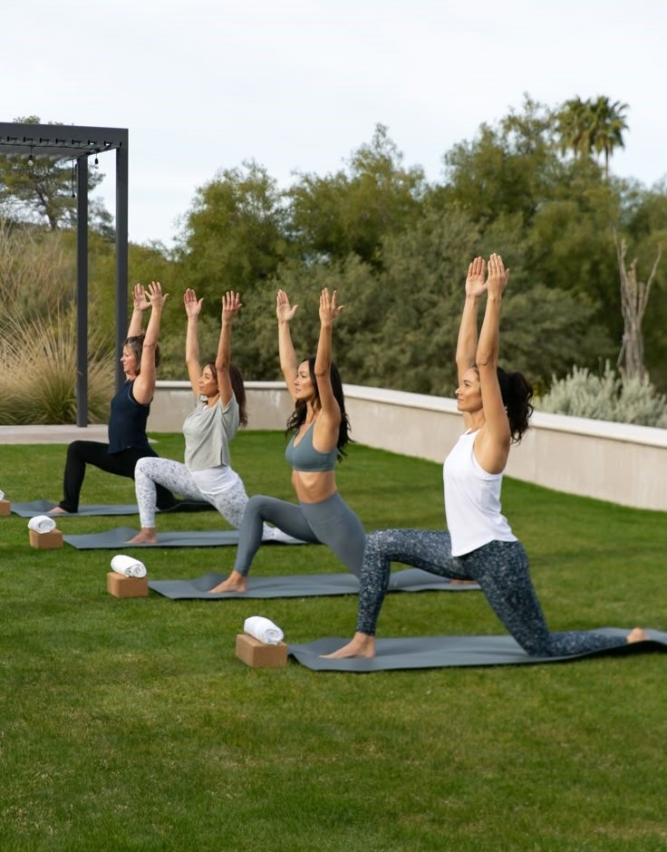

Maksimalkan Manfaat Yoga untuk Kesehatan Jiwa dan Raga
Pelajari bagaimana yoga memberi manfaat luar biasa bagi kesehatan fisik dan mental Anda sehari-hari.
Baca Selengkapnya →
ZENIS Wellness Center menghadirkan berbagai layanan yoga, spa, dan beauty treatment untuk membantu Anda menjaga kesehatan tubuh, pikiran, dan keseimbangan hidup.
Pilih layanan terbaik yang dirancang untuk membantu Anda merasa lebih rileks, sehat, dan percaya diri.
Temukan sesi yoga terbaik untuk membantu tubuh dan pikiran menjadi lebih rileks dan seimbang.
Layanan massage profesional untuk membantu mengurangi stres dan meningkatkan relaksasi tubuh.
Rasakan pengalaman spa premium dengan suasana yang nyaman dan menenangkan.
Temukan berbagai tips kesehatan dan relaksasi untuk menjaga keseimbangan tubuh dan pikiran.

Pelajari bagaimana yoga memberi manfaat luar biasa bagi kesehatan fisik dan mental Anda sehari-hari.
Quality time dapat membantu meningkatkan suasana hati dan mengurangi tekanan sehari-hari.
Meditasi dapat membantu tubuh menjadi lebih rileks dan meningkatkan kualitas tidur.
Pengalaman pengguna yang telah menggunakan layanan wellness melalui platform ini.
"Proses booking sangat mudah dan tampilannya nyaman digunakan. Saya jadi lebih mudah melakukan self-care setelah aktivitas kuliah."
"Desain website terlihat modern dan nyaman digunakan sehari-hari. Booking jadi lebih praktis dan cepat."
"Saya suka karena proses transaksi dan booking terasa lebih simpel dan tidak membingungkan."
Temukan layanan wellness terbaik dan nikmati pengalaman relaksasi yang nyaman dan praktis.
Mulai Sekarang